说实话，在访校之前，从网上的攻略来看，品川国际并不是那种名气特别响的名字。在我的选校清单里，它被归类为"保底校"之一。
但真正踏入校园的那一刻，我改变了看法。
这段经历让我深刻体会到：网络上的口碑和攻略只是参考，每个家庭和每所学校之间，都有自己独特的"化学反应"。如果条件允许，请务必带着孩子亲自去感受一次。
学校基本信息
Main Campus（G3-11）南品川
关于品川国际
品川国际学校（Shinagawa International School）创立于 1991 年，是东京较早引入 IB 课程的国际学校之一，至今已有超过 33 年的办学历史。
学校目前提供 IB PYP（小学阶段）和 IB MYP（初中阶段）两段课程，并于 2024 年正式开设高中部，正在申请 IBDP 认证。这是学校发展的重要里程碑——完整的 IB 三段式体系一旦建立，学校将能积累大学录取成果，从而跻身第一梯队的有力竞争者。
学校采用双校区布局：东品川的 Seaside Campus 负责幼小阶段（Preschool 至 Grade 2），南品川的 Main Campus 承接小学高年级至高中（Grade 3 至 Grade 11）。两个校区相距不远，形成了完整的成长路径。
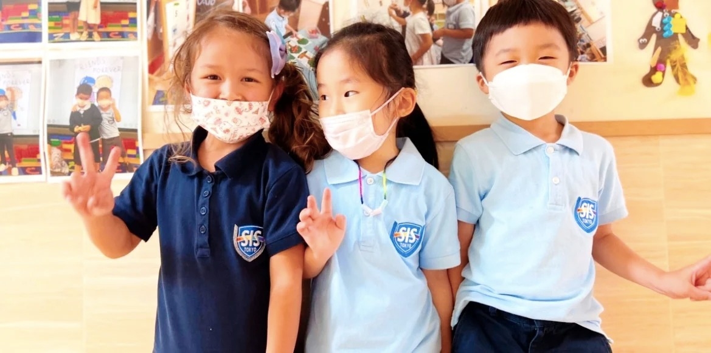
品川国际的孩子们，活力满满 — 蓝白色调的 SIS 校服是这里独特的标识
第一印象：一位让我印象深刻的招生老师
接待我的是招生老师 S，一位在美国留过学的日本女老师，说话语速偏快，英语流利，整个人充满活力，开朗可爱。
我按门铃进入小学部，还没来得及在一楼厕所整理好仪容，S 已经站在二楼电梯口等候了。这份细心和热情，在我此后走访的学校中并不多见。
品川国际的积极性也体现在日常沟通上：无论我晚上几点发邮件，一般在日本时间早上 7-8 点就能收到回复，雷打不动。这种"狼性"招生风格，是这所学校在东京国际学校圈子里口口相传的标签。
校园巡礼：麻雀虽小，五脏俱全
小学部是一栋独立的别墅式建筑，走几步路是初高中部的另一栋别墅。虽然空间不算宽裕，但每个功能区都被认真地打造到位了。
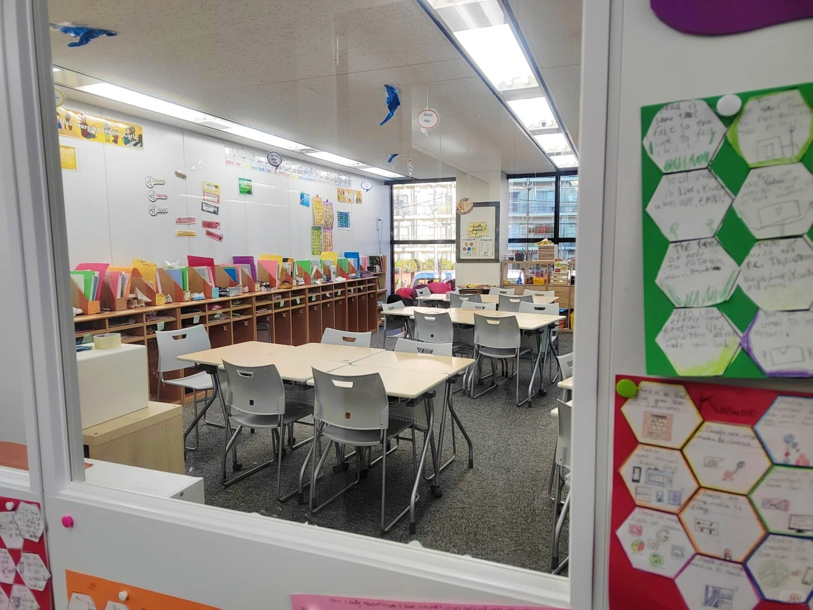
教室走廊两侧贴满了孩子们的作品 — IB PYP 的理念是：学习是可见的，值得被展示
教室里，孩子们的写作练习被张贴在门口。S 顺手翻给我看了 1-2 年级的英文写作：题目是"你觉得麦当劳和 Burger King 哪个更好"，孩子们用简单句写出了自己的论点和理由，逻辑清晰，有观点、有论据。这让我很触动——学写作，不是从背模版开始，而是从表达真实想法开始。
科学实验室 & 音乐教室
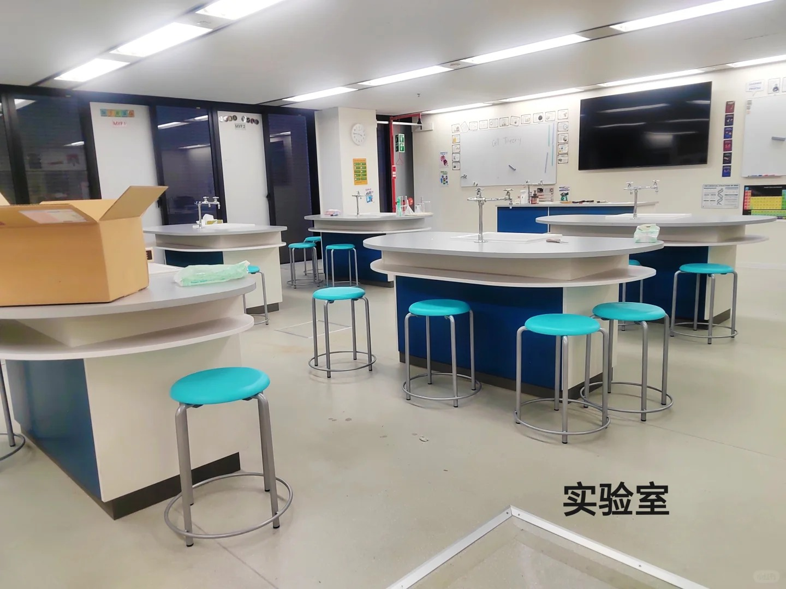
实验室 — 岛式圆形操作台，有独立水槽和实验设备
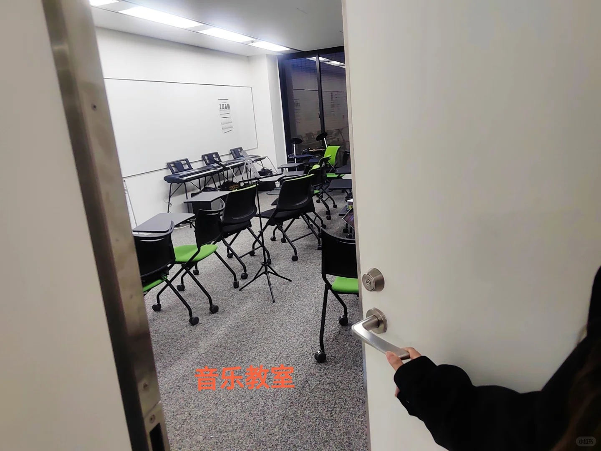
音乐教室 — 专业椅与音响设备，不是摆设
实验室宽敞明亮，采用岛式圆形操作台设计，有独立水槽和实验设备。S 提到孩子们曾用 Haribo 软糖做过一次实验——好玩的科学就该从生活出发。音乐教室配置完善，能看到老师坐在孩子中间，抱着吉他弹唱，这种现场感是真正在做音乐教育，不是走形式。
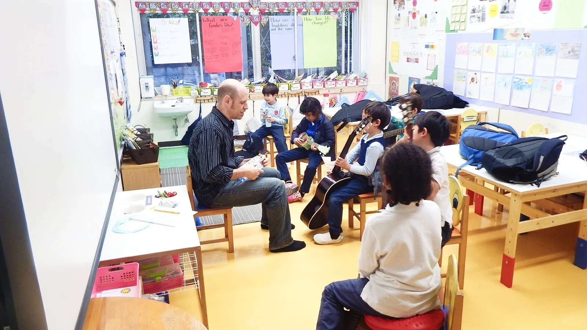
音乐课现场 — 老师抱着吉他，孩子们围坐一圈，这一幕在东京国际学校里并不常见
语言文学教室 & 学生活动室
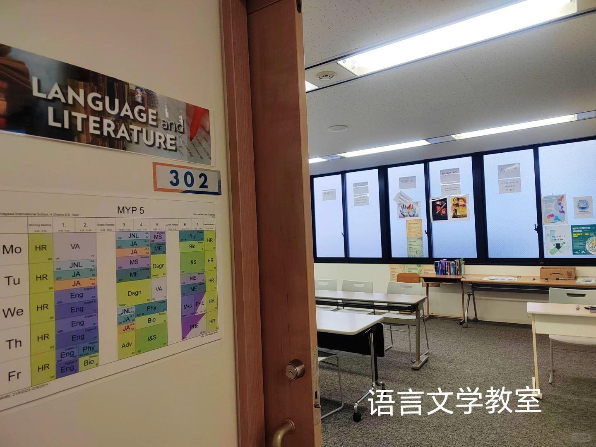
语言文学教室（MYP）— 门口贴着清晰的课表安排
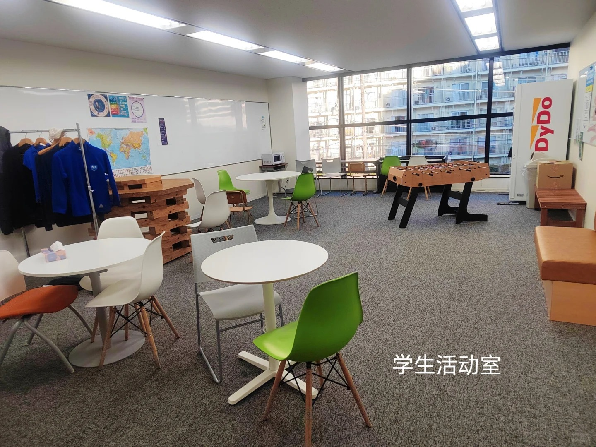
学生活动室 — 桌游、桌上足球、舒适的休息区
图书馆 & 创意工作室
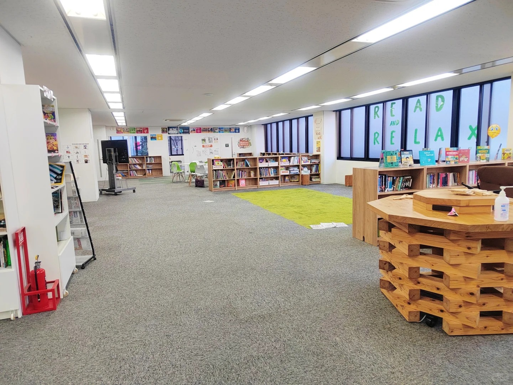
图书馆 — 藏书丰富，绿色阅读角，适合静下心翻书
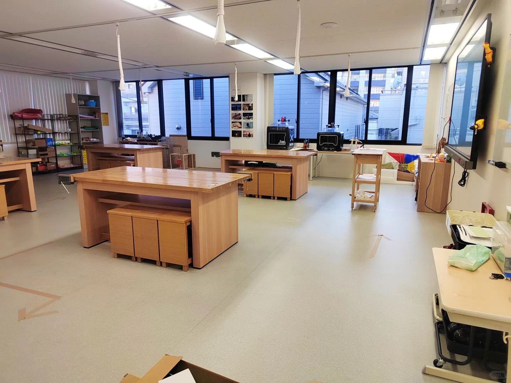
创意工作室 — 宽大的工作台，适合项目制学习和设计课
室外操场 & 国际日大厅
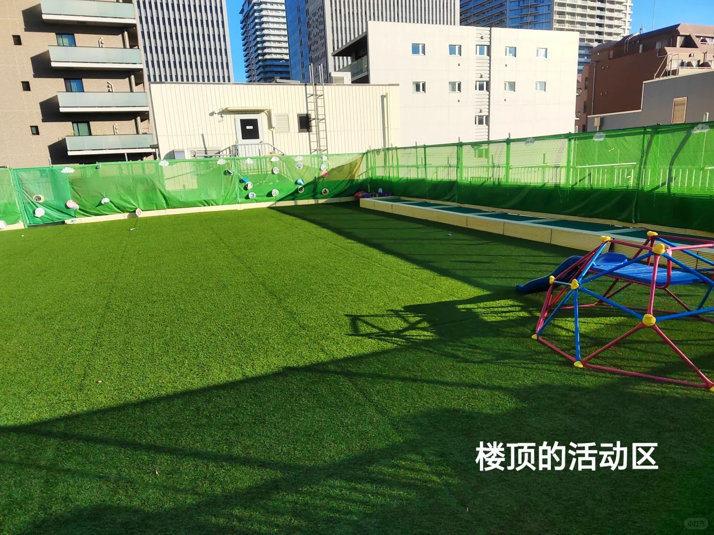
楼顶活动区 — 人工草坪铺就的"天台操场"，在东京市中心难得一见
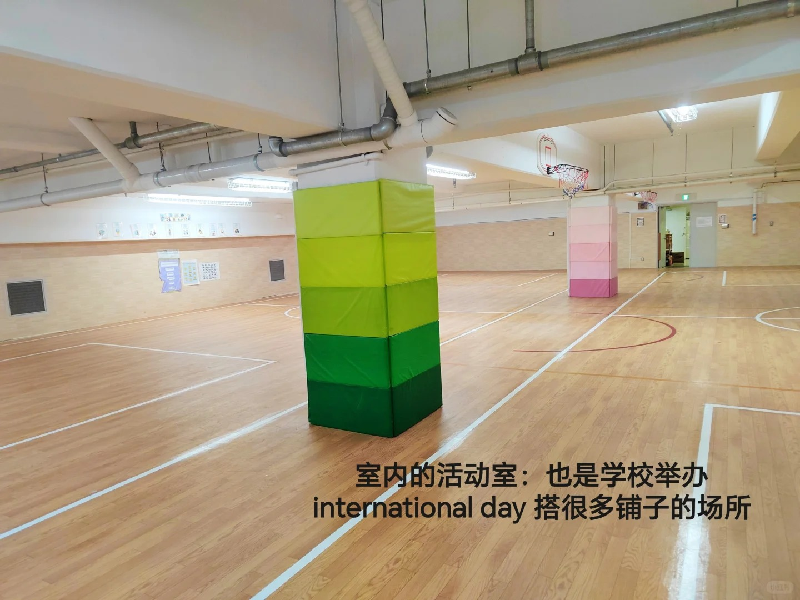
室内多功能大厅 — 也是每年 International Day 时各国文化展台的场地
每年的 International Day 是品川国际最热闹的时刻。来自不同背景的孩子在这里搭建各自国家的文化摊位，摆出特色美食和手工艺品——半天时间，校园变成了一个小小的联合国。
中文课：在东京，保留母语
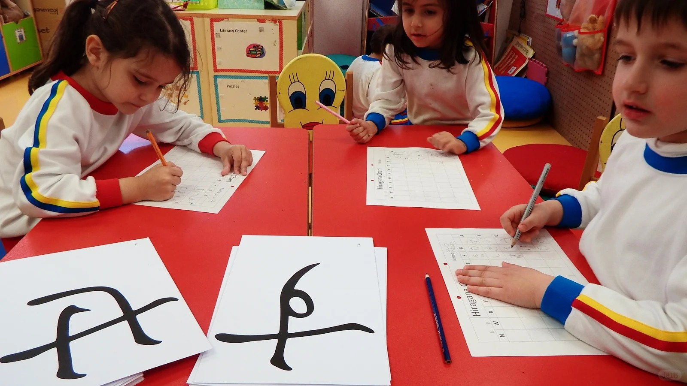
孩子们认真练习汉字 — 全英文环境中，母语课程的存在对华人家庭来说意义重大
对于华人家庭来说，一个核心问题是：进入全英文学校后，孩子的中文还能保住吗？品川国际提供中文语言课，让孩子在主要以英文学习的环境里，持续接触中文的读写训练。这在东京众多国际学校中，是一个值得重视的加分项。
体育配套：一条马路，一整座运动馆
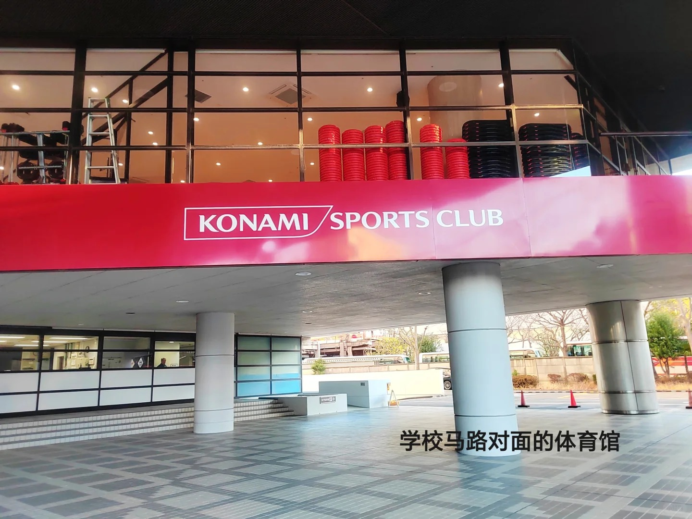
学校马路对面的 Konami Sports Club — 游泳池、健身馆、多种运动课程一应俱全
品川国际的选址格外聪明。学校马路对面就是 Konami Sports Club——一个配备游泳池、健身馆、多种运动课程的大型综合体育馆。学生可以直接去那里上游泳课，家长也能额外为孩子报名体操、跆拳道、高尔夫、瑜伽等丰富的课程。
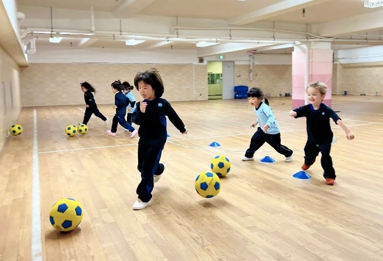
室内体育课 — 小朋友们在专业球场上踢足球，运动氛围浓厚
这种"借力"的思路，解决了城市型国际学校最大的痛点之一：校区面积有限，但体育课程依然能做到丰富完整。从这一点来看，品川的运动课程设计思路确实很巧妙。